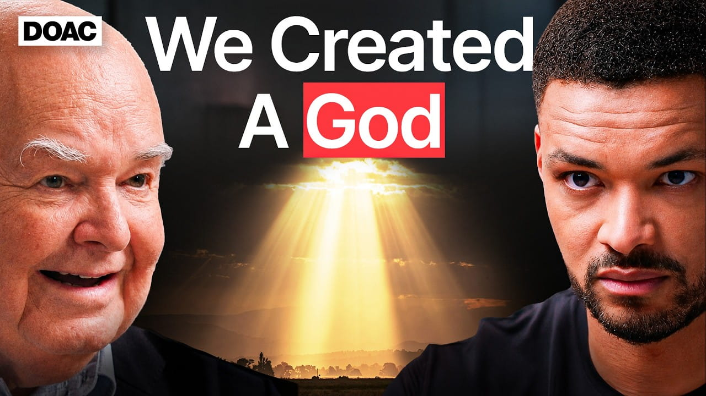

No.1 Christianity Expert: If You DON'T Believe In a God You NEED to Hear This!

Summary
In his discussion, John Lennox considers the interaction between artificial intelligence and human consciousness from the standpoint of the Christian worldview. He describes how breakthroughs in science and technology are changing the way people think about their identity, morality, and their place in the rapidly developing modern society. Lennox draws a distinction between narrow AI and artificial general intelligence. The former refers to software programs used for particular tasks. The latter stands for a highly intelligent system that might be comparable to or even better than the human mind.
One of the key issues raised in the discussion is human uniqueness. According to John Lennox, unlike machines, humans are conscious, have a moral sense, and have innate dignity since they were made by God in his image. Lennox further emphasizes that although the computer may imitate intelligent behavior, it lacks self-consciousness.
The issue of ethics in the age of artificial intelligence raises important questions about surveillance, mass unemployment, loss of intimacy in communication, and other negative consequences of using technologies. With regard to these risks, the speaker states that people should take steps to preserve dignity and human relationships, as well as moral and ethical values from the Christian worldview.
Speaker /(Guest): John Lennox
Interviewer / Host: Steven
Bartlett
Concept of the Interview: Faith, atheism, human consciousness, and the relationship between
Christianity and science
Personal Opinion
In my case, I am a proud atheist following the teachings of Buddhism without believing much in the religious doctrine and texts. Nevertheless, I try to adhere to the basic tenets of Buddhism that include Pansil and the law of causation. Regardless of the main focus of this interview being on Christianity, I gained much intellectual insight from it as well. This video inspired me to reflect further on the interconnection between science, religion, and human consciousness. This was similar to some other content from other creators that I watch often, such as Alex O’Connor and Professor Dave Explains.
Reflection
This interview provided me with a wider view of how various worldviews can try to account for humanity’s existence, consciousness, and moral values. I have been viewing religion skeptically before, based only on contradictions and the absence of factual evidence in support of certain views and statements. This interview made me realize that most arguments associated with religions are not only religious but also philosophical, ethical, and connected to our human experience in general. This has made me think of how important it is to consider both science and spirituality when trying to find explanations to the questions that humans ask themselves constantly.
Date I Watched the Interview
July 12, 2026
New Vocabulary
- Atheism: The absence of belief in the existence of deities.
- Christian apologetics: The branch of theology that defends and argues for the truth of Christian beliefs.
- Causality: The principle that every effect has a specific cause, often used in philosophical and scientific discussions of existence and events.